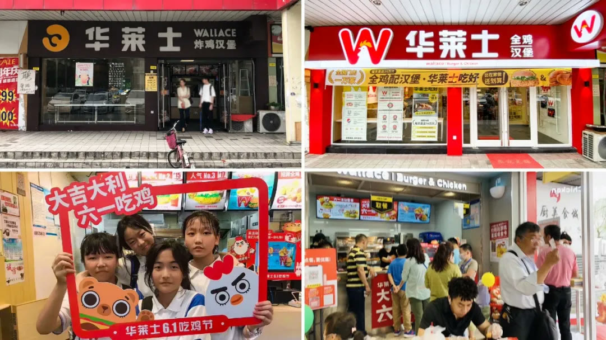
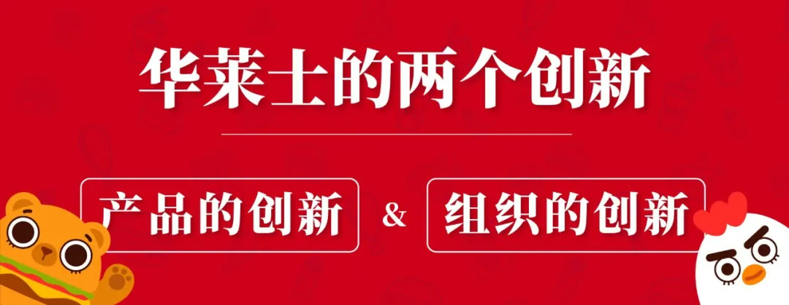
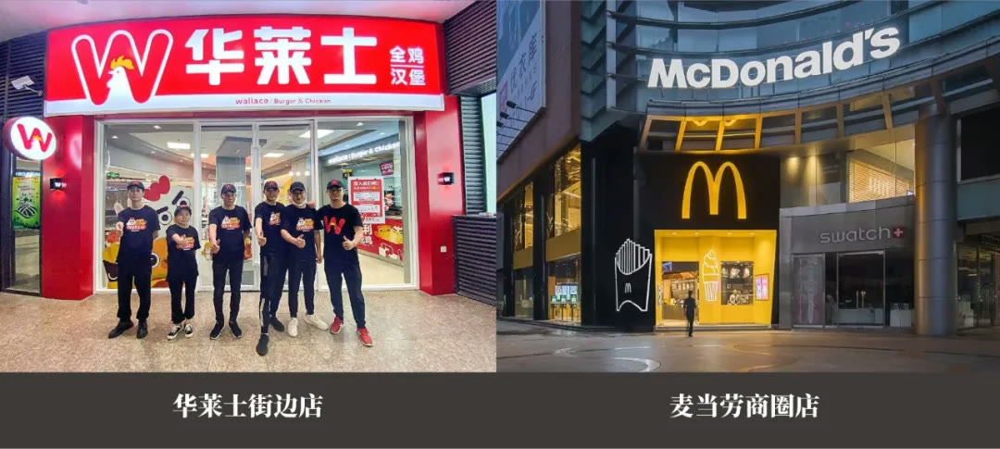
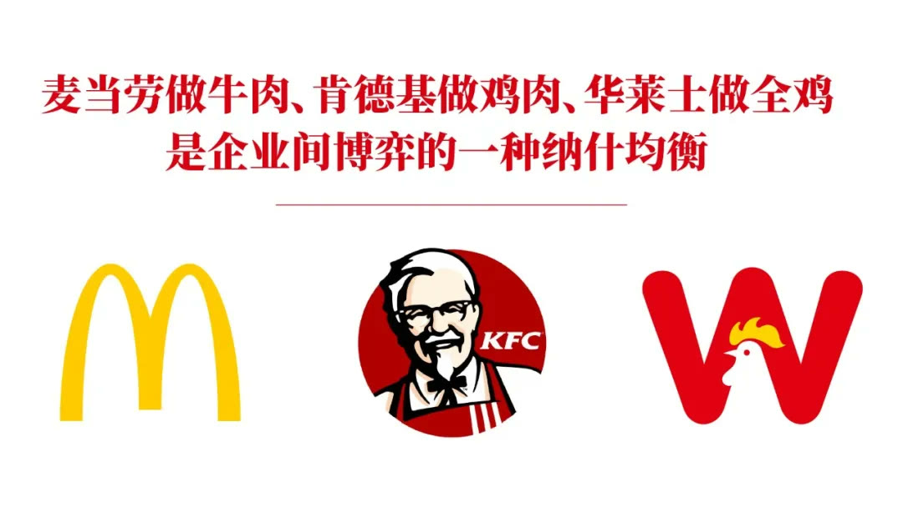
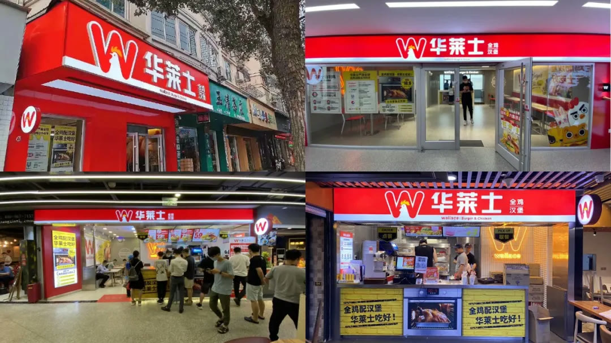

01 · 博弈
竞争不是打败对手，而是赢得利润
华莱士不复制麦当劳、肯德基的大店和高投入模式，而是坚持便宜、便利和高密度小店，在不同经营结构中寻找稳定空间。

02 · 4P
用小狗策略保持总成本领先
低价、小店、下沉渠道和少打大广告彼此配合，形成一套难以拆分的营销4P。任何单项改变都可能破坏成本优势。

03 · 产品
以“全鸡＋汉堡”建立差异化品类结构
全鸡连接华莱士的供应链与既有产品经验，也避开与国际品牌在同一重点产品上正面冲突。

04 · 品牌
用W公鸡符号和品牌谚语提升信任
从英文名提炼W，并与公鸡形象结合；“全鸡配汉堡，华莱士吃好”把产品结构写进品牌语言。

05 · 门店
让全国门店成为最大自有媒体
门店、包装和物料统一使用新系统，在保持平价的同时建立规模感与品质信任。
